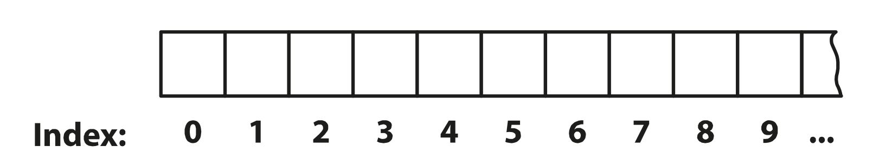

Arrays (Felder)
Softwareentwicklung 1
Was ist einfacher?
Viele einzelne Krüge
tragen

Einen Kasten mit Krügen tragen
Es wird davon ausgegangen, dass das Bier auf den Abbildungen alkoholfrei ist.
Arrays (Felder)
Ein Array (deutsch: „Feld“) kann mehrere Variablen desselben Datentyps unter einem einzigen Variablennamen speichern.
- Jeder Wert befindet sich in einem Element des Arrays. Jedes Element hat denselben Datentyp.
- Die Anzahl der Elemente eines Arrays ist unveränderlich.
- Jedes Element hat eine Nummer. Diese nennt man Index.
Beispiele
Viele einzelne (zusammenhängende) Variablen
float preis1 = 1;
float preis2 = 234;
float preis3 = 7;
float preis4 = 42.5;
String farbe1 = "red";
String farbe2 = "green";
String farbe3 = "lightblue";
vs. Array mit mehreren Speicherplätzen
float[] preise = new float[]{1,234,7,42.5};
String[] farben = new String[]{"red", "green", "lightblue"};
Deklaration von Array-Variablen
Die Deklaration einer Array-Variablen ähnelt einer gewöhnlichen Deklaration, nur dass nach dem Datentyp eckige Klammern [] gesetzt werden.
Datentyp[] Variablenname;
Der Variablenname soll aussagen, was jedes Element enthält und steht im Normalfall in der Mehrzahl.
Beispiele:
int[] noten;
String[] wochentage;
float[] temperaturen;
Beachte: Diese Arrayvariablen sind leer – sie enthalten (noch) keine Arrays!
Arrays erzeugen
- Ein Array mit einer bestimmten Länge erzeugen:
new Datentyp[Länge];- Alle Elemente werden beim Erzeugen wie folgt initialisiert:
- Zahlen-Arrays (int, double, etc.) werden mit der Zahl 0 befüllt.
- boolean-Arrays werden mit dem Wert false befüllt.
- char-Arrays werden mit dem Code 0 befüllt. Achtung: das ist nicht das Ziffern-Zeichen für „0“! Dieses hat den Code 48.
- Bei String-Arrays (und Arrays über andere Objekte) werden die Elemente mit „null“ befüllt.
- Alle Elemente werden beim Erzeugen wie folgt initialisiert:
- Die Array-Größe kann nachträglich nicht mehr geändert werden!
Arrays erzeugen
- Ein Array erzeugen, das aus bestimmten Elementen besteht:
new Datentyp[] { Wert0, Wert1, Wert2, ... }- Alle Werte (Konstante oder Ausdrücke) müssen denselben Datentyp haben.
new Datentyp[]kann auch weggelassen werden.{ Wert0, Wert1, Wert2, ... }
- Die Array-Größe kann nachträglich nicht mehr geändert werden!
Beispiele
String[] texte = new String[25]; // Array, das 25 Strings speichern kann
String[] wochentage;
wochentage = new String[]{"Mo","Di","Mi","Do","Fr","Sa","So"};
int[] zahlen = {11, 22, 33}; //new int[] kann auch weggelassen werden
Index
- Der Index nummeriert die Speicherplätze.
- Vergleich: Spinde mit Nummern (Schule, Fitnessstudio)
- Das erste Element hat den Index 0!
- Gleiches Prinzip wie der Index eines Zeichens bei einem String.
Elemente verwenden
- Um ein bestimmtes Element auszuwählen, gibt man die Arrayvariable an und schreibt danach den Index in eckigen Klammern.
Arrayvariable[Index] Arrayvariable[Index](ein konkretes Element im Array) kann man verwenden wie eine gewöhnliche Variable.- Beispiele:
int[] noten = {1,2,3,4,5}; System.out.println(noten[0]); //gibt 1 aus System.out.println(noten[4]); //gibt 5 aus System.out.println(noten[1]+ noten[2]); //gibt 5 aus (2+3) String[] speisen = {"Pizza", "Lasagne", "Gnocci"}; speisen[1] = "Spaghetti"; //ändert Lasagne auf Spaghetti
Länge eines Arrays
- Die Anzahl der Elemente eines Arrays erhält man mittels:
Arrayvariable.length - Beachte: Der größte Index ist immer um eins kleiner als die Länge (=Anzahl der Elemente) des Arrays!
- Beispiel:
int[] noten = {1,2,3,4,5}; int len = noten.length; // len ist 5; String[] wochentage = new String[]{ "Mo","Di","Mi","Do","Fr","Sa","So" }; System.out.println(wochentage.length); //Ausgabe: 7
Parameter & Rückgabenwerte
- Arrays können sowohl als Parameter als auch als Rückgabetyp von Methoden verwenden werden (wie jeder andere Datentyp).
- Beispiele:
// Liefert das Maximum der Elemente des Arrays int max(int[] numbers) { ... } // Liefert die Namen der Schüler*innen der angegebenen Klasse String[] namen(String klasse) { String[] n; ... return n; } - Wird ein Array als Parameter übergeben, so wird das Original übergeben (keine Kopie!). Änderungen, die man in der Methode an den Elementen dieses Arrays vornimmt, verändern das Array auch für den Aufrufer (siehe auch Referenzvariablen ).
Wann man Arrays verwendet
In diesen Situationen ist es (vorläufig) meist sinnvoll, ein Array zu verwenden:
- Man benötigt mehrere gleichartige Variablen, und zwar:
- mit demselben Datentyp.
- mit derselben Bedeutung (z.B. nur Vornamen, nur Noten)
- Man will alle diese Variablen in gleicher Weise bearbeiten oder verwenden.
- Die Anzahl dieser Variablen ist beim Programmieren noch nicht bekannt, sondern erst zur Laufzeit.
Arrays und Schleifen
- Schleifen verwendet man häufig, um die Arrayelemente in gleicher (oder sehr ähnlicher) Weise zu verarbeiten oder zu verändern.
- Die Laufvariable einer for-Schleife wird als Arrayindex verwendet.
- Um das gesamte Array zu durchlaufen, durchläuft die Laufvariable den Bereich 0 bis
array.length-1 - Beispiele:
int[] noten = {1,1,5,3,2,5,4,4,3,3,2}; String[] wochentage = { "Mo","Di","Mi","Do","Fr","Sa","So" }; //Die Namen der Wochentage ausgeben for (int i = 0; i < wochentage.length; i = i + 1) System.out.println(wochentage[i]); } //Alle Noten um einen Grad verbessern for (int i = 0; i < noten.length; i = i + 1) if (noten[i] > 1) { noten[i] = noten[i] – 1; } }
for-each-Schleife
Falls der Index nicht benötigt wird, so kann auch die for-each-Schleife verwendet werden, um alle Elemente eines Arrays zu durchlaufen:
for (Datentyp Variablenname : Arrayname ) {
// Schleifenrumpf
}
Beispiel:
//Namen aller Wochentage ausgeben
for (String s : wochentage)
System.out.println(s);
}
Vorteile:
- Übersichtlicher – man benötigt weder eine Laufvariable noch einen Arrayindex
Nachteile:
- Keine Zuweisung an Arrayelemente möglich
- Der Index des jeweiligen Arrayelements ist nicht bekannt
Referenzvariable
- Arrayvariablen sind Referenzvariablen (im Gegensatz zu Variablen, die primitive Typen wie int, double, float,... speichern)
- Referenzvariablen speichern eine Referenz ("Zeiger") auf das Array und nicht das Array selbst!
int[] a = { 1, 2, 3 };
System.out.println("Vorher a[0] = " + a[0]); //Ausgabe: 1
int [] b = a; // a und b zeigen auf das selbe Array -- keine Kopie der Elemente!
System.out.println("Vorher b[0] = " + b[0]); //Ausgabe: 1
b[0] = 5;
System.out.println("Nachher a[0] = " + a[0]); //Ausgabe: 5
System.out.println("Nachher b[0] = " + b[0]); //Ausgabe: 5
Referenzvariablen & Parameter
Bei Parameter wird auch die Referenz übergeben - keine Kopie des Arrays.
Änderungen, die man in der Methode an den Elementen dieses Arrays vornimmt, verändern das Array auch für den Aufrufer.
void setup() {
float[] values = {1.1f, 2.2f, 3.3f};
change(values); //Bei einem Array wird eine Referenz ("Zeiger") übergeben
System.out.println(values[0]); //Ausgabe: 7.1
float f = 5;
change(f); //Für einen primitiven Typ wird der Wert übergeben
System.out.println(f); //Ausgabe: 5
}
void change(float[] data) {
data[0] = 7.1;
}
void change(float x) {
x = 7.1;
}
Umwandlung String <–> char-Array
Umwandeln eines String in ein char-Array
char[] charArray = "Ich liebe SEW!".toCharArray();
// Ausgabe: [I, c, h, , l, i, e, b, e, , S, E, W, !]
System.out.println (Arrays.toString(charArray));
Umwandlung char-Array zu String
char[] charArray = "Ich liebe SEW!".toCharArray();
String s = new String(charArray);
System.out.println(s); // Ausgabe: Ich liebe SEW! oder:
// new String (charArray, erstes Zeichen, Zeichen-Anzahl);
String sZwei = new String (charArray, 4, charArray.length-4);
System.out.println(sZwei); // Ausgabe: liebe SEW!
Arrays sortieren
Ein Array kann mit dem Befehl Arrays.sort(array) aufsteigend sortiert werden.Zeichen werden nach ihrem Zeichensatz-Code sortiert.
int[] zahlen = {5,3,1,7};
Arrays.sort(zahlen);
System.out.println(Arrays.toString(zahlen)); //Ausgabe: [1, 3, 5, 7]
char[] charArray = "Ich liebe SEW!".toCharArray();
Arrays.sort(charArray);
System.out.println (Arrays.toString(charArray));
// Ausgabe: [ , , !, E, I, S, W, b, c, e, e, h, i, l]
Weitere Tipps
- Falls ein Array nur zu Kontrollzwecken ausgeben werden soll, bietet sich an, das Array mittels
Arrays.toString(...)in einen String umzuwandeln und diesen dann auszugeben:float[] values = {1.1f, 2.2f, 3.3f}; System.out.println(Arrays.toString(values)); - Generell: Die Klasse
Arrays(beachte das "s" am Ende) stellt etliche Methoden für Arrays zu Verfügung (Arrays.toString(),Arrays.sort(), ...). - Häufiger Fehler: Bei einem Zugriff auf ein Array-Element, das nicht existiert (d.h. der Index ist < 0 oder >= der Array-Länge), wird eine ArraysIndexOutOfBoundsException ausgelöst und das Programm abgebrochen.
int[] a = {47, 11}; a[-1] = a[0]; // -1 ist kleiner als 0 a[2] = 44; // die Elemente haben die Indizies (Nummern) 0 und 1
Zweidimensionale Arrays
Zweidimensionale Arrays
Die Elemente eines eindimensionalen Arrays kann man sich entlang einer Linie aufgereiht vorstellen:
Ein zweidimensionales Array ist ein Array von Arrays. Seine Elemente kann man sich in einer Ebene angeordnet vorstellen:
Zweidimensionale Arrays
In Java brauchen zweidimensionale Arrays nicht „rechteckig“ zu sein. In der zweiten Dimension können sie beliebig unregelmäßig sein, z.B.:
Anwendung zweidimensionale Arrays
Mit zweidimensionalen Arrays können Daten gespeichert werden, die üblicherweise in Form einer Tabelle vorliegen.
Arrayvariable
- Für eine Variable, die ein zweidimensionales Array enthalten kann,
schreibt man hinter den Datentyp zwei leere eckige Klammernpaare [ ][ ].
Datentyp[][] Variablenname; -
Beispiele für Definitionen von zweidimensionalen Arrayvariablen:
String[][] ticTacToeFelder; int[][] testreihen;
Zweidimensionale Arrays erzeugen
- Ein rechteckiges Array mit bestimmten Größen erzeugen (ähnlich wie bei eindimensionalen Arrays):
new Datentyp[Länge1][Länge2]- Länge1 ist die Länge in der 1. Dimension, Länge2 die Länge in der 2. Dimension.
- Array erzeugen, das aus bestimmten Elementen besteht:
{ { Wert00, Wert01, ... }, { Wert10, Wert11, ...}, ... }- Merkhilfe: „Array von Arrays“
- Die Länge des Arrays in der 1. Dimension entspricht der Anzahl der Wertefolgen in geschwungenen Klammern { }
- Die Länge in der 2. Dimension entspricht der Anzahl der Elemente der jeweiligen Wertefolge.
- Mit diesem Verfahren kann man auch ein nicht-rechteckiges Array erzeugen.
Beispiele
String[][] schachbrett = new String[8][8];
String[][] ticTacToeFelder = {
{"", "X", ""},
{"","","O"},
{"O","X",""}
};
String[][] daten = {
{"Sophie", "02.03.2006", "Wien", "Fußball"},
{"Matthias", "04.09.2008", "Mistelbach", "Kochen"},
{"Lara", "01.12.2010", "Tulln", "Brettspiele"}
}
int[][] testreihen = {
{1,4,2,2},
{1,1,2}
}
unregelmäßige Arrays erzeugen
// Erzeuge ein 2D-Array mit 3 Zeilen, aber noch ohne Spalten
int[][] jaggedArray = new int[3][];
// Weise jeder Zeile ein Array unterschiedlicher Länge zu
jaggedArray[0] = new int[2]; // Zeile 0 hat 2 Spalten
jaggedArray[1] = new int[4]; // Zeile 1 hat 4 Spalten
jaggedArray[2] = new int[3]; // Zeile 2 hat 3 Spalten
Elemente verwenden
- Man gibt nach dem Namen der Arrayvariablen zuerst den Index der 1. Dimension und dann den Index der 2. Dimension an, beide in eckigen Klammern.
Arrayvariable[Index1][Index2] - Beispiele
ticTacToeFelder[2][1] // letzte Zeile, mittlere Spalte schachbrett[0][7] // "rechtes oberes" Feld
Schleifen
Alle Elemente eines zweidimensionalen Arrays a durchlaufen:
- Mit zwei verschachtelten for-Schleifen:
for (int i = 0; i < a.length; i = i + 1) { for (int j = 0; j < a[i].length; j = j + 1) { // Element a[i][j] verarbeiten // ... } } - Mit zwei verschachtelten for-each-Schleifen (Annahme:
aist ein String-Array):for (String[] x : a) { for (String s: x) { // s (Inhalt des jeweiligen Elements) verarbeiten // ... } }
Tipps
- Falls ein mehrdimensionales Array nur zu Kontrollzwecken ausgeben werden soll, bietet sich an, das Array mittels
Arrays.deepToString(...)in einen String umzuwandeln und diesen dann auszugeben:float[][] values ={{1.1f, 2.2f, 3.3f}, {4.1f, 2.1f}}; System.out.println(Arrays.deepToString(values));
Mehrdimensionale Arrays
Arrays können nicht nur zwei Dimensionen, sondern auch drei oder mehr Dimensionen haben.
int [][][] data = {
{ {1,4,8} , {2,3,7} },
{ {12, 18, 20}, {17, 12, 22} }
};
System.out.println(data[0][1][1]); //output: 3
Fragen?
Wünsche?
Beschwerden?
Anregungen?